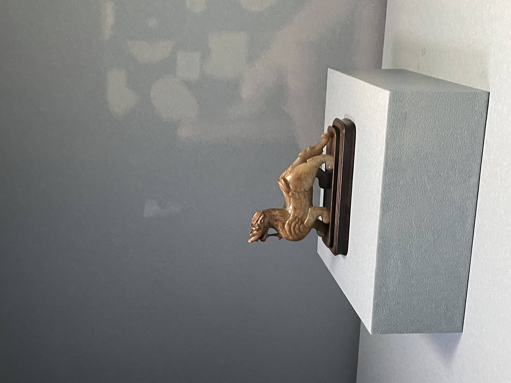

Sejarah awalnya National Palace Museum adalah dulu, semua barang koleksi diambil dan dipindahkan dengan alasan perang, dan museum ini dibangun untuk mempertunjukkan koleksi tersebut kepada publik.
Salah satu artefak yang ada di National Palace Museum adalah "daging babi". Artefak ini bukan daging sungguhan, melainkan batu yang dibentuk menyerupai daging babi. Dulu, rakyat memberikan artefak ini sebagai hadiah kepada raja. Maknanya sangat dalam: rakyat sangat kelaparan, sementara raja bisa makan daging sebanyak-banyaknya. Setelah menerima hadiah tersebut, sang raja menangis terharu.
Masa lalu Chiang Kai Shek Memorial Hall adalah tempat peringatan kemerdekaan Taiwan, dan sekarang menjadi museum.
Peran Chiang Kai Shek dalam membentuk Taiwan sebagai negara modern adalah dengan membangun institusi yang memperkuat identitas Taiwan sebagai Republik Tiongkok (ROC).